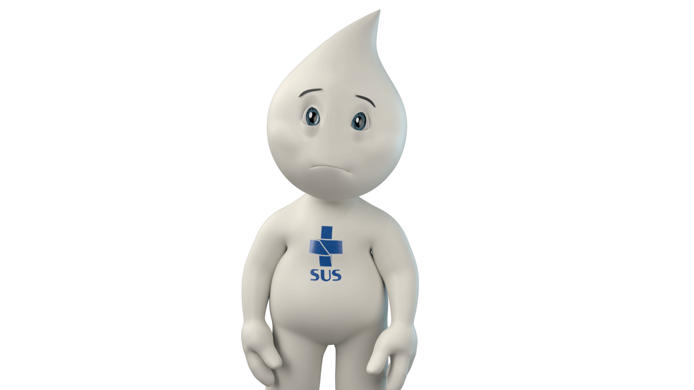

Oq pode piorar a saúde mental A saúde mental é uma parte vital da nossa saúde e bem-estar geral. No entanto, muitas coisas na vida podem ter um impacto negativo na saúde mental de uma pessoa. Aqui estão algumas das coisas que podem danificar a saúde mental:
